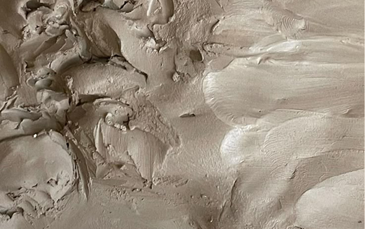

제작과정
흙이 형태가 되고, 시간이 그것을 완성합니다.
-

White StoneWare
유럽산 화이트 스톤웨어는 안정적인 강도와 균일한 물성을 바탕으로,형태의 완성도와 내구성을 동시에 확보할 수 있는 점토입니다.은은한 색감과 미세한 텍스처를 자연스럽게 드러내며,LOAMO가 지향하는 차분한 분위기와 균형을 가장 잘 표현합니다.
-
Always By Hand
물레 위에서 형태를 잡거나, 손으로 직접 빚어 형태를 만듭니다. 완벽하게 동일한 형태가 아닌,미세한 차이를 가진 형태를 지향합니다. 손의 움직임이 그대로 형태로 남습니다.
-
First Firing
가마에서 초벌을 진행함니다. 이는 두 번의 소성 중 첫 번째이며, 높은 온도 속에서 흙은 단단해지고, 형태가 고정됩니다. 불은 형태를 완성하는 첫 번째 과정입니다.
-
Signature Glazing
첫 번째 소성 후 완전히 고체령태가 되어 유약을 칠할 준비가 됩니다. 제품의 표면에 로아모만의 시그니처 유약을 입혀 색감과 질감을 더합니다. 유약의 흐름과 농도에 따라 각각 다른 표정이 만들어집니다.
-
Final Glazing
다시 한 번 가마에 넣어재벌을 진행합니다. 1240도의 고온의 시간 속에서 유약과 형태가 하나로 완성됩니다.
-
White StoneWare
완성된 제품은 정성스러운 포장 과정을 거칩니다. 각 제품은 형태와 두께를 고려해 충격의 최소화를 위해 개별보호되며 단순한 보호를 넘어 제품이 전달되는 마지막 경험으로 이어집니다. 친환경 포장과 미니멀한 패키징으로 인상을 남깁니다.